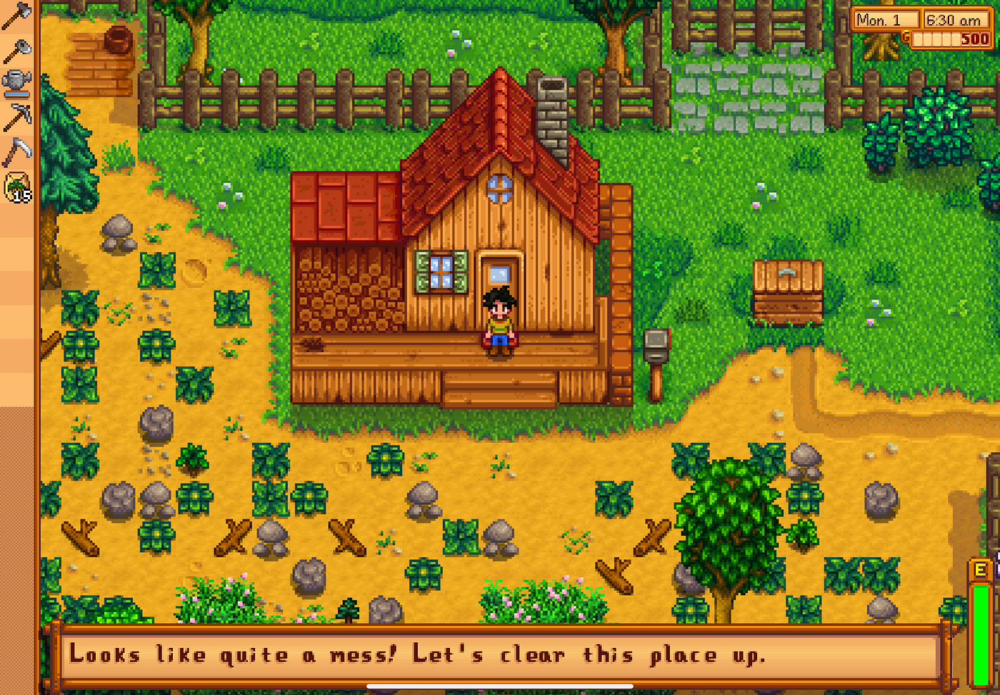
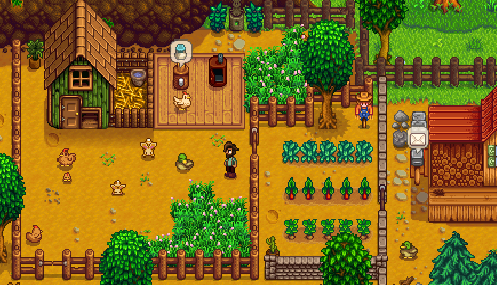

More on Stardew Valley
Stardew Valley is a charming indie farming simulation game that immerses players in the peaceful and blissful life of a small-town farmer. Set in Stardew Valley, players inherit a over-run farm from their late grandfather and must restore it to its former glory while also connecting with the diverse community of Pelican Town. From planting and harvesting crops to raising livestock and mining for resources, players have a wide range of activities to engage in as they improve their farm and build relationships with the villagers. The game's pixel art style and relaxing soundtrack contribute to its cozy atmosphere, making it a beloved choice for players seeking a calm gaming experience.
Beyond farming, Stardew Valley offers a variety of activities to keep players engaged, including fishing, cooking, crafting, and exploring the surrounding wilderness and neighboring island. With each passing season, new events and challenges arise, keeping players on thier toes. Additionally, the game features a cast of characters, each with their own personalities and storylines to uncover through dialogue and interactions. Whether players choose to focus on maximizing their farm's efficiency, delving into the mysteries of the valley, or fostering friendships with the townspeople, Stardew Valley provides a delightful escape to a simpler way of life.
 An Introduction to Stardew Valley
An intro to the developer and to the game can be found here!